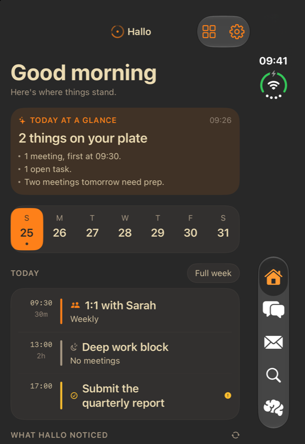
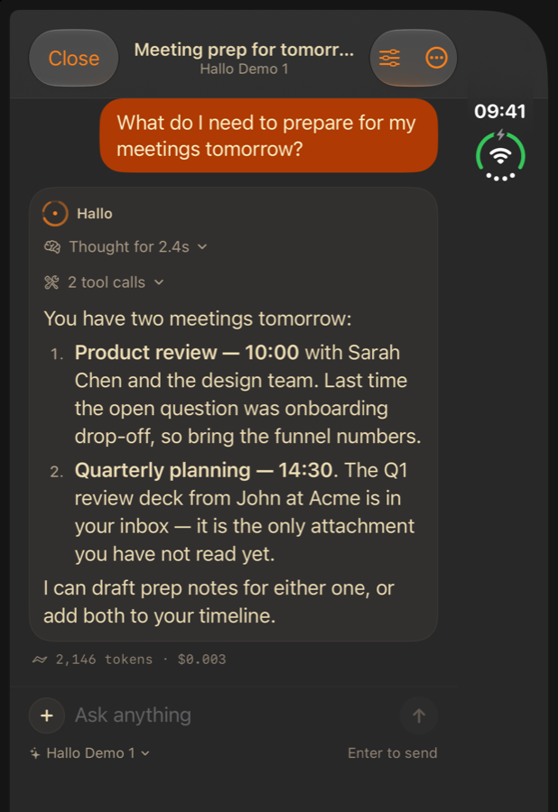
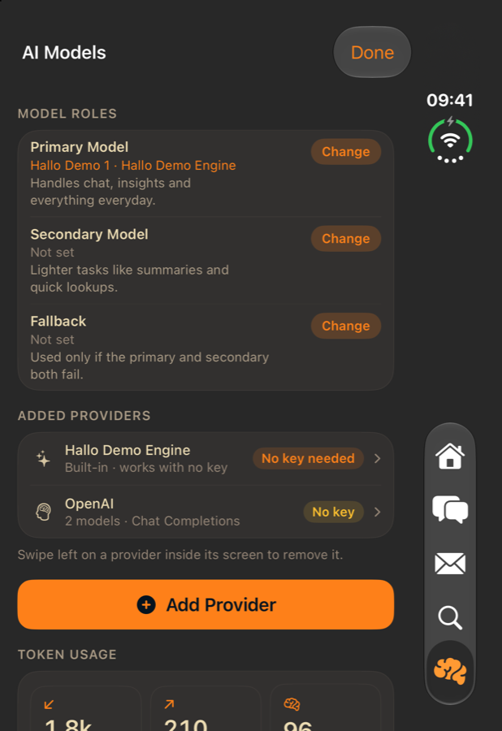
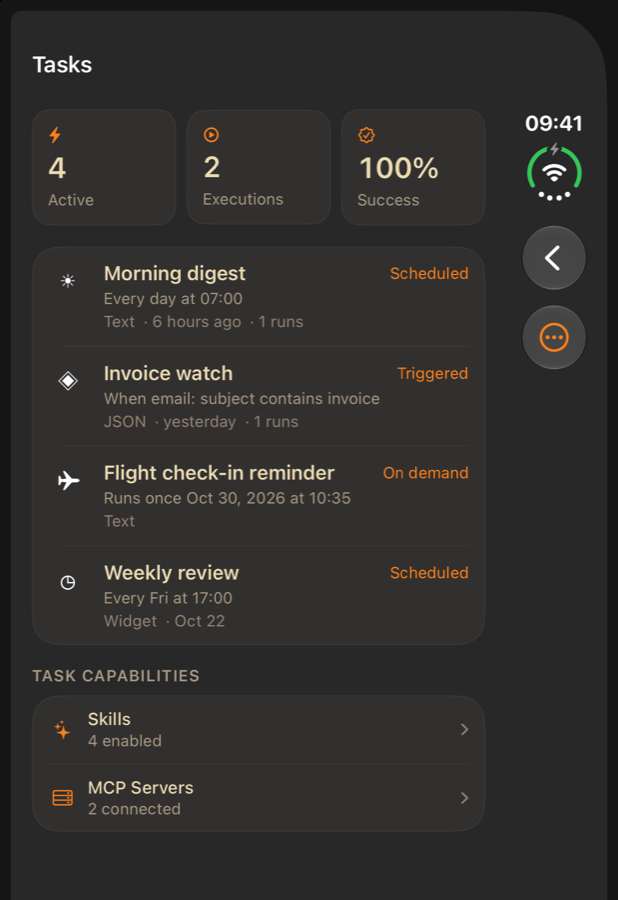
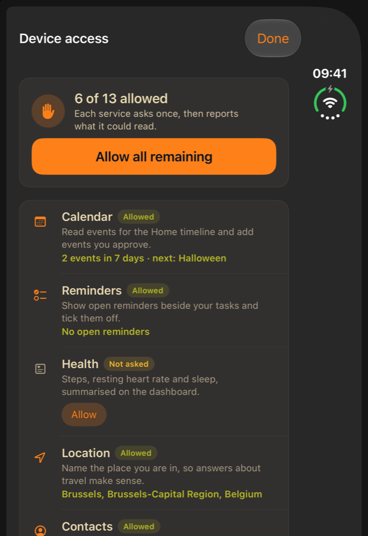
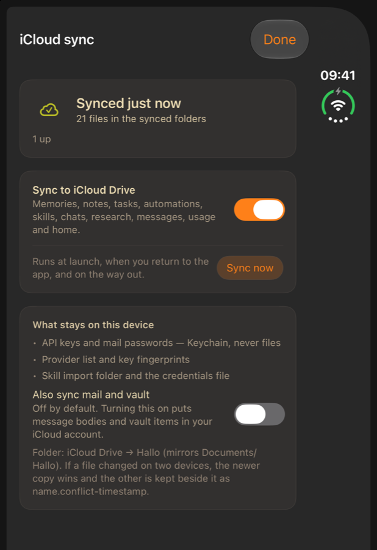
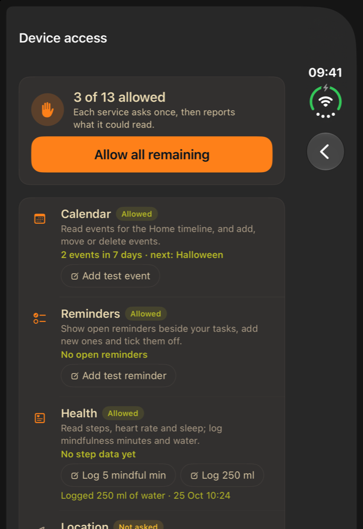

v0.1.0 iOS 18+ · iPhone & iPad · no subscription
A SwiftUI study reconstruction of the Halo iOS app — fully unlocked, no paywall, no in-app purchase. Your life, handled: mail, tasks, notes, memory, research, automations and a chat assistant that works with zero setup.







Support
Issues and ideas are tracked publicly on GitHub so you can see what is planned and what is already fixed. No account needed to read; a free GitHub account is needed to open an issue.
Crashes, wrong data, mail that will not sync, a screen that looks off.
Open a bug report →A feature you are missing, a flow that takes too many taps, wording that reads wrong.
Request an improvement →What it does
The built-in demo engine answers immediately — no account, no key. Adding a provider key (OpenAI, Claude, Gemini, Grok, MiniMax, OpenRouter or a local server) is optional and switches the same interface onto a real model.
Add an IMAP account and Hallo fetches the newest 20 messages — read and unread — with app-password guidance for Gmail, iCloud, Outlook and Yahoo. Passwords stay in the Keychain.
Streaming answers, a reasoning disclosure, the tool calls behind each answer, and a token/cost footer. Pick a model per conversation.
Scheduled agent runs (once, cron or event), result formats, skills, MCP servers and an execution log with Run Now.
Agent pages are markdown files on the device: Documents/Hallo/memories/*.md.
Edit them in Files and the app loads your version next launch.
Face ID-gated vault items, research against your own mail with cited findings, and a DynamicUI renderer for boarding passes, seat maps, timers and checklists.
Calendar, Reminders, Health, Location, Contacts, Motion, Camera, Photos, Microphone, Speech and Face ID — asked for in one screen, each reporting what it could read.
Claude Code skills import unchanged: a folder with SKILL.md keeps its
name, description and allowed-tools, and its references come along.
Point the app at an MCP server over Streamable HTTP, connect once, and its tools become callable from the app — bearer tokens stay in the Keychain.
Turn on iCloud sync and your notes, memories, skills and automations follow you. Secrets stay in the Keychain; mail and vault are opt-in.
Add an event, add a reminder, log a mindfulness session or a glass of water — and see the confirmation. Steps and heart rate stay read-only because HealthKit says so.
Gruvbox dark and light, following the system appearance automatically — or pinned Light/Dark in Settings.
FAQ
No. A built-in demo engine answers without any configuration, including tool calls and thinking. A key is only needed if you want a specific real model.
No. There is no subscription, trial, ad or in-app purchase anywhere. Settings → Edition lists every unlocked feature.
Most providers require an app-specific password, not your normal password:
Also check the IMAP host: Gmail imap.gmail.com, iCloud
imap.mail.me.com, Outlook outlook.office365.com, Yahoo
imap.mail.yahoo.com. Port 993 uses TLS.
If it still fails, pull to refresh in Mail and read the error line — it names what the server refused.
Settings → Device access lists every service with the reason it is used and, once allowed, what it read — for example "2 events in 7 days" or "4,120 steps today". Anything you decline simply stays off; no screen depends on it.
Yes. A skill is a folder containing SKILL.md with frontmatter
(name, description, allowed-tools) and the
instructions as the body — the same layout as ~/.claude/skills. Import a
single skill folder, a folder of skill folders, or a loose .md file from
the Skills screen, or drop them into Documents/Hallo/imports and relaunch.
Automations → Skills & MCP → MCP Servers → Add. Enter the server URL (https, or a
local network address) and an optional bearer token, then tap Connect: the app runs
initialize, notifications/initialized and
tools/list, and each tool appears as a chip you can run.
Yes, once you turn on Settings → iCloud sync. The app mirrors its workspace
into iCloud Drive and merges changes whenever it launches or returns to the foreground.
API keys and mail passwords never sync; message bodies and vault items only if you
switch on "Also sync mail and vault". If the same file changed on two devices, the
newer copy wins and the other is kept beside it as name.conflict-timestamp.
Yes. With access granted, Hallo can create a calendar event (title, times, notes, location, calendar of your choice), move or rename it, and delete it; and it can add a reminder with a due date and alarm, mark it complete, or remove it. Health is written for mindfulness minutes and water only — steps, heart rate and sleep are read-only.
On the device, in Documents/Hallo: mail, chats, notes, tasks, vault,
research, usage, and one markdown file per memory page. API keys and mail passwords are
in the iOS Keychain, never in those files. Nothing is sent anywhere except to the model
provider you configure, or the IMAP server you add.
Settings → Data → Delete all local data. Accounts and API keys are kept; delete those per account or provider if you want them gone too.
No. Hallo is a study reconstruction: the original App Store binary is FairPlay-encrypted, so this was rebuilt from the bundle's own architecture notes, its localised strings and its design tokens. It is not affiliated with or endorsed by the original's authors, and no original assets are bundled.
Changelog
Two-way calendar, reminders and health. Hallo can add, move and delete events, add reminders with due dates and tick them off, and log mindful minutes and water — each write re-checks access and reports what it saved.
Under the hood. A clean build: no compiler warnings in Debug or Release, for simulator and device, and the IMAP connection handshake now settles exactly once instead of relying on a captured flag.
iCloud sync. Memories, notes, tasks, skills, automations and chats mirror into iCloud Drive and come back on your other devices. Keys never sync, mail and vault are opt-in, and when a file changed on two devices the newer copy wins with the other kept beside it.
Skills and remote MCP. Import Claude Code skills unchanged — a folder with SKILL.md (name, description, allowed-tools) — from Files or by dropping them into the workspace. Remote MCP servers connect for real: the app runs the handshake, lists their tools and can call them.
Device access. Calendar, Reminders, Health, Location, Contacts, Motion, Camera, Photos, Microphone, Speech and Face ID can now be granted in one place — and each one shows what it actually read (event count, steps today, your city), so a permission is never a switch that does nothing.
Mail that actually syncs. Adding an account connects over IMAP and pulls the newest 20 messages, read and unread, with MIME decoding for encoded subjects, multipart bodies and attachments.
A real workspace folder. Memories are markdown pages, skills and automations one JSON file each, all under Documents/Hallo and visible in Files.
Renamed to Hallo. Every user-facing string, the app name and the assistant name, with the old data folder migrated automatically.
System appearance follows iOS. Fixed a bug where System silently meant dark: the app now reads the real window trait instead of its own overridden scheme.
Gruvbox. Dark and light palettes from the official Gruvbox colours, with the app icon recoloured to match.
MiniMax provider with base URL and starter models preloaded — paste a token, pick a model. Keys became visible on demand with a stored-key fingerprint.